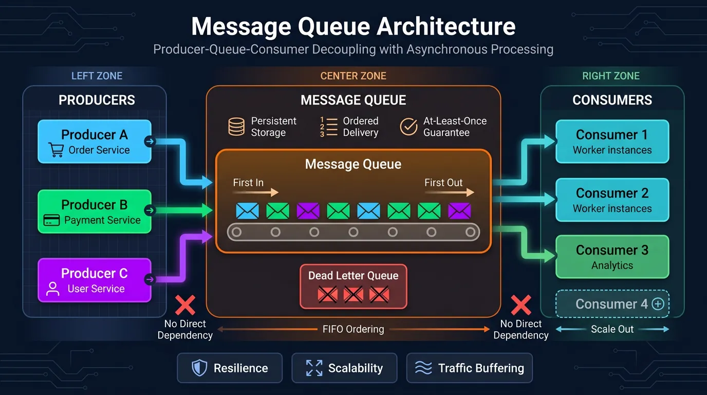

Message Queues
Series Navigation: This is Part 7 of the 15-part System Design Series. Review Part 6: API Design first.
System Design Mastery
Your 15-step learning path • Currently on Step 7
Introduction to System Design
Fundamentals, why it matters, key conceptsScalability Fundamentals
Horizontal vs vertical scaling, stateless designLoad Balancing & Caching
Algorithms, Redis, CDN patternsDatabase Design & Sharding
SQL vs NoSQL, replication, partitioningMicroservices Architecture
Decomposition, discovery, testing, resilienceAPI Design & REST/GraphQL
RESTful principles, GraphQL, gRPC7
Message Queues & Event-Driven
Kafka, outbox, event sourcing, idempotent consumers8
CAP Theorem & Consistency
Distributed trade-offs, eventual consistency9
Rate Limiting & Security
Throttling algorithms, DDoS protection10
Monitoring & Observability
Logging, metrics, distributed tracing11
Real-World Case Studies
URL shortener, chat, feed, video streaming12
Data Modeling & Schema Design
Data modeling, schema design, indexing13
Distributed Systems Deep Dive
Consensus, Paxos, Raft, coordination14
Authentication & Security
OAuth, JWT, zero trust, compliance15
Questions & Trade-offs
Common questions, SQL vs NoSQL, push vs pullMessage queues enable asynchronous communication between services by decoupling the sender from the receiver. This improves system resilience, scalability, and allows services to operate independently.

Key Insight: Message queues turn synchronous failures into asynchronous retries. When a downstream service is down, messages wait safely in the queue.
Why Use Message Queues?
- Decoupling: Producers and consumers don't need to know about each other
- Buffering: Handle traffic spikes by queuing requests
- Resilience: Messages persist even if consumers are temporarily unavailable
- Scalability: Add more consumers to process messages in parallel
- Ordering: Guarantee message processing order when needed
Basic Queue Producer/Consumer
# Producer - Sends messages to queue
import pika
import json
connection = pika.BlockingConnection(pika.ConnectionParameters('localhost'))
channel = connection.channel()
# Declare a durable queue (survives broker restart)
channel.queue_declare(queue='order_queue', durable=True)
def send_order(order):
message = json.dumps(order)
channel.basic_publish(
exchange='',
routing_key='order_queue',
body=message,
properties=pika.BasicProperties(
delivery_mode=2, # Make message persistent
)
)
print(f"Sent order: {order['id']}")
# Send sample orders
send_order({"id": "order_123", "user": "john", "total": 99.99})
send_order({"id": "order_124", "user": "jane", "total": 149.50})# Consumer - Processes messages from queue
import pika
import json
import time
connection = pika.BlockingConnection(pika.ConnectionParameters('localhost'))
channel = connection.channel()
channel.queue_declare(queue='order_queue', durable=True)
def process_order(ch, method, properties, body):
order = json.loads(body)
print(f"Processing order: {order['id']}")
# Simulate processing time
time.sleep(2)
# Acknowledge message after successful processing
ch.basic_ack(delivery_tag=method.delivery_tag)
print(f"Completed order: {order['id']}")
# Fetch one message at a time (fair dispatch)
channel.basic_qos(prefetch_count=1)
# Start consuming
channel.basic_consume(queue='order_queue', on_message_callback=process_order)
print("Waiting for orders...")
channel.start_consuming()